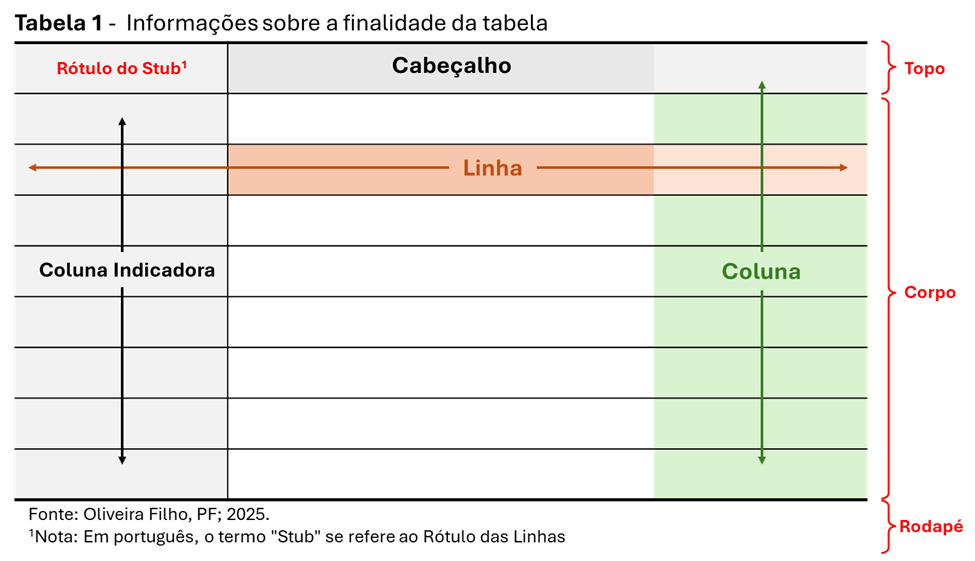

| Drogadição em Gestantes1 | ||
|---|---|---|
| Droga | Frequência Absoluta2 | Frequência Relativa (%) |
| Nenhuma | 913 | 72.06 |
| Fumo | 301 | 23.76 |
| Álcool | 27 | 2.13 |
| Medicamentos | 23 | 1.82 |
| Crack | 2 | 0.16 |
| Cocaína | 1 | 0.08 |
| Total | 1267 | 100.00 |
| 1 Hospital Geral de Caxias do Sul, RS, 2008 | ||
| 2 101 gestantes não informaram a condição de drogadição | ||
| Fonte: Oliveira Filho, PF (2025) | ||
7 Tabelas
A apresentação tabular de dados, ou tabulação, é a organização dos dados por meio de tabelas. Uma tabela é uma disposição sistemática e lógica dos dados na forma de linhas e colunas com relação às características dos dados. É uma forma ordenada, compacta, autoexplicativa e eficiente de mostrar os dados levantados, facilitando a sua compreensão e interpretação. Permite identificar padrões, tendências e intuições valiosos.
A tabela mais utilizada para descrever os dados é a tabela de frequência.
7.1 Componentes de uma tabela
Uma tabela bem estruturada é essencial para comunicar dados de forma clara e científica, especialmente em publicações acadêmicas. Os componentes fundamentais que uma tabela (Figura 7.1) deve conter, para estar pronta para publicação, são os seguintes:
Título da Tabela - deve ser claro, conciso e informativo. Indica o conteúdo da tabela e o contexto do estudo. Deve estar no topo da tabela.
Cabeçalho - Identifica as variáveis apresentadas. Inclui unidades de medida quando necessário (ex: idade em anos, glicemia em mg/dL)
Corpo da tabela - Apresenta os valores estatísticos: média, mediana, desvio padrão, intervalo de confiança, etc. Pode incluir frequências absolutas e relativas (em proporção ou porcentagem). Os dados devem estar alinhados corretamente para facilitar a leitura.
Notas de rodapé - Explicações adicionais sobre abreviações, símbolos ou indicação de testes estatísticos aplicados (ex: teste t de Student, ANOVA, qui-quadrado). Pode incluir significância estatística (p < 0,05).
Fonte dos dados - Caso os dados sejam secundários ou provenientes de outra pesquisa, deve-se citar a fonte.

7.2 Tabelas de Frequências
As tabelas de frequências são essenciais em estatística para organizar e resumir dados. Ajudam a entender como os valores em um conjunto de dados se distribuem, mostrando a frequência com que cada valor ou intervalo de valores aparece.
Basicamente, uma tabela de frequências responde a uma pergunta simples: “Quantas vezes cada coisa aconteceu?”.
De um modo geral, uma tabela de frequência deve cumprir algumas finalidades:
- Clareza e Organização: Elas transformam dados brutos e desorganizados em informações claras e fáceis de interpretar.
- Identificação de padrões: Uma tabela deve ajudar a visualizar rapidamente os valores mais comuns (a moda) e a distribuição geral dos dados.
- Base para Outras Análises: São o ponto de partida para criar gráficos como histogramas, polígonos de frequência e gráficos de setores, que oferecem uma representação visual ainda mais intuitiva.
- Tomada de decisão: Permitem que se tire conclusões rápidas sobre um conjunto de dados. Por exemplo, na Tabela 7.1, verifica-se que “a maioria das gestantes, no Hospital Geral de Caxias do Sul, referem não ser drogaditas” ou “72% das gestantes, no Hospital Geral de Caxias do Sul, referem não ser drogaditas”.
7.2.1 Tipos de Frequências
Geralmente, em uma tabela de frequência aparecem os seguintes tipos de frequência:
7.2.1.1 Frequência Absoluta (f)
É o número de vezes que um valor específico ocorre no conjunto de dados. Por exemplo, na Tabela 7.1, 913 das parturientes referem não usar drogas. Podem ser:
Distribuição de frequência não agrupada
As distribuições de frequência não agrupada listam cada valor individual de um conjunto de dados com a sua respetiva contagem (frequência), sendo ideais para conjuntos de dados pequenos ou com poucas categorias. A Tabela 7.1 mostra a frequência da variável drogadição na gestação, com os diferentes tipos de drogas usadasDistribuição de frequência agrupada
As distribuições de frequência agrupadas organizam os dados em intervalos ou classes, úteis para conjuntos de dados extensos, pois condensam a informação em grupos menores, como faixas etárias, estado nutricional da gestante na gravidez, usando o IMC categorizado, idade gestacional categorizada em pré-termo, termo e pós-termo.
7.2.1.2 Frequência Relativa (fr)
É a proporção da frequência absoluta em relação ao total de dados. É calculada dividindo a frequência absoluta pelo número total de observações (\(fr=f/n\)).
A frequência relativa pode ser expressa como uma fração, decimal ou, mais comumente, como uma porcentagem (frp). É útil para comparar distribuições de dados com tamanhos totais diferentes. Por exemplo, na Tabela 7.1, 2,13% das parturientes declararam ser alcoolistas.
7.2.1.3 Frequência Absoluta Acumulada (F)
É a soma das frequências absolutas até um determinado ponto na tabela. Ela mostra quantos dados estão abaixo ou iguais a um certo valor. Na Tabela 7.1 não tem importância, são variáveis nominais sem uma ordem estabelecida. Não faz sentido somar “pessoas fumantes” com “pessoas não usuárias de drogas”. As frequências cumulativas não fazem sentido para variáveis nominais porque os valores não têm ordem — um valor não é maior ou menor que outro valor.
7.2.1.4 Frequência Relativa Acumulada (Fr)
É a soma das frequências relativas até um determinado ponto. Ela mostra a proporção de dados que estão abaixo ou iguais a um certo valor. Assim como a frequência absoluta acumulada, não faz sentido usar a frequência relativa acumulada com dados nominais, onde a ordem das categorias não tem valor.
7.2.2 Regras gerais para construção de tabelas de frequência
Existem algumas recomendações na construção de uma tabela de frequência (1):
Deve ter um título na parte superior que responda as perguntas: “o que? quando? onde?” relativas ao fato estudado;
Deve ter um rodapé, na parte inferior da tabela, onde se coloca notas necessárias e a fonte dos dados;
As colunas externas da tabela devem ser abertas, o emprego de linhas verticais para a separação das colunas no corpo da tabela é opcional;
Na parte superior e inferior, as tabelas devem, ser fechadas por linhas horizontais;
Nenhuma casela deve ficar vazia, apresentando um número ou um símbolo. Se não se dispuser do dado, colocar reticências … e a presença de um X representa que o dado foi omitido para evitar a identificação.
Tabelas devem ter, pelo menos, duas linhas no seu corpo e, prioritariamente, pelo menos três colunas. Tabelas com duas colunas devem ser evitadas, pois as informações contidas nelas podem, em geral, ser apresentadas no corpo do texto da obra.
7.2.3 Construção de tabelas de frequência no R
7.2.3.1 Dados para os exemplos
Para os exemplos, o dataframe dadosMater.xlsx será acionado para fornecer dados, semelhante ao realizado na Seção 6.3.
Após carregar o dataframe, serão selecionadas as variáveis necessárias. As variáveis uti_neo e sexo serão convertidas em fatores; a variável idade_mae será categorizada em três níveis (<20 anos, 20-35 anos, >35 anos), criando uma nova variável categIdade. Além disso, será criada a variável imc que também será categorizada em uma nova variável estato_nutri em quatro níveis (Baixo Peso, Peso adequado, Sobrepeso, Obesidade). Por último, será extraída uma amostra de n = 200 e atribuída a um objeto dados:
library(dplyr)
library(readxl)
set.seed(123)
dados <- readxl::read_excel("dados/dadosMater.xlsx") |>
select(idade_mae, peso, altura, anos_est, fumo, peso_rn, apgar1, uti_neo) |>
mutate(fumo = factor(fumo,
levels = c(1,2),
labels = c("fumante", "não fumante")),
uti_neo = factor(uti_neo,
levels = c(1,2),
labels = c("sim", "não")),
categIdade = case_when(
idade_mae < 20 ~ "< 20 anos",
idade_mae >= 20 & idade_mae <= 35 ~ "20 a 35 anos",
idade_mae > 35 ~ "> 35 anos"),
categIdade = factor(categIdade,
levels = c("< 20 anos", "20 a 35 anos", "> 35 anos")),
imc = peso/altura^2,
estado_nutri = case_when(
imc < 18.5 ~ "Baixo Peso",
imc >= 18.5 & imc < 25 ~ "Peso adequado",
imc >= 25 & imc < 30 ~ "Sobrepeso",
imc >= 30 ~ "Obesidade"),
estado_nutri = factor(estado_nutri,
levels = c("Baixo Peso", "Peso adequado",
"Sobrepeso", "Obesidade"))) |>
slice_sample(n=200)
str(dados)tibble [200 × 11] (S3: tbl_df/tbl/data.frame)
$ idade_mae : num [1:200] 16 19 27 18 29 38 15 26 27 22 ...
$ peso : num [1:200] 68 49 64 53 76 55 64 81 62 59.5 ...
$ altura : num [1:200] 1.59 1.62 1.78 1.65 1.64 1.6 1.69 1.65 1.72 1.65 ...
$ anos_est : num [1:200] 9 11 13 7 11 4 7 6 8 11 ...
$ fumo : Factor w/ 2 levels "fumante","não fumante": 2 2 1 2 2 2 1 2 2 2 ...
$ peso_rn : num [1:200] 2940 3060 1930 2790 1750 ...
$ apgar1 : num [1:200] 8 9 NA 9 NA 4 9 8 8 9 ...
$ uti_neo : Factor w/ 2 levels "sim","não": 2 2 2 2 1 2 2 2 2 2 ...
$ categIdade : Factor w/ 3 levels "< 20 anos","20 a 35 anos",..: 1 1 2 1 2 3 1 2 2 2 ...
$ imc : num [1:200] 26.9 18.7 20.2 19.5 28.3 ...
$ estado_nutri: Factor w/ 4 levels "Baixo Peso","Peso adequado",..: 3 2 2 2 3 2 2 3 2 2 ...7.2.3.2 Tabelas de frequência para dados categóricos
Função table() e função prop.table()
O R básico possui uma função incorporada, table() que permite a verificação da frequência absoluta de variáveis categóricas de uma maneira bem simples. A função table() é a base para criar tabelas de frequência. Ela conta o número de ocorrências de cada valor em um vetor (ou coluna de um dataframe). Por exemplo, a frequência absoluta (f) em cada uma das categorias da variável categIdade: (idade das parturientes dividida em classes):
f <- table (dados$categIdade)
print (f)
< 20 anos 20 a 35 anos > 35 anos
33 144 23 A função prop.table() é usada para calcular as frequências relativas a partir de uma tabela de frequência absoluta. Em outras palavras, ela transforma as contagens em proporções ou porcentagens. A função round() recebe a função prop.table() para arredondar para três dígitos a frequência relativa (fr):
fr <- round(prop.table(f), 3)
print(fr)
< 20 anos 20 a 35 anos > 35 anos
0.165 0.720 0.115 Multiplicando por 100 a fr, tem-se a frequência relativa em porcentagem – frp ou fr(%). A operação será colocada dentro da função round(), como feito com a fr, arredondando o resultado para dois dígitos.
frp <- round(fr*100, 2)
print(frp)
< 20 anos 20 a 35 anos > 35 anos
16.5 72.0 11.5 Embora as funções table() e prop.table() sejam separadas, é muito comum usá-las juntas para construir uma tabela de frequência completa. Portanto, os passos para a construção de uma tabela de frequência no R são os seguintes
Para atingir este objetivo, a construção de uma tabela de frequência absoluta e de frequência relativa (%) deve ser o primeiro passo. Os passos seguintes são;
Passo 1:Usar as funções table() e prop.table() juntas como feito acima, para construir as frequências absoluta e relativa.
Passo 2: Criar um dataframe combinando as funções para uma melhor visualização:
tab_completa <- data.frame(
f = as.vector(f),
fr = as.factor(fr),
frp = as.vector(frp))
print(tab_completa) f fr frp
< 20 anos 33 0.165 16.5
20 a 35 anos 144 0.72 72.0
> 35 anos 23 0.115 11.5Este último exemplo mostra a flexibilidade do R para manipular e apresentar dados de forma clara e organizada, combinando as saídas de funções básicas em uma única tabela.
Para análises mais avançadas ou para variáveis quantitativas contínuas, pode-se usar a função mutate() , junto com a função case_when() (2) , usada para criar a variáveis categIdade e estNutri, na Seção 7.2.3.1. Também é possível associar a função mutate() com a função cut(), como se verá a seguir.
7.2.3.3 Tabelas de frequência para dados numéricos
A construção de tabelas de frequência com dados agrupados em classes é crucial quando se lida com variáveis quantitativas contínuas, como idade, altura, peso do recém-nascido, renda, etc. Usar table() diretamente, nesses casos não faz sentido, pois cada valor pode ser único e o número de “categorias” seria imenso, tornando a tabela quase inútil. A solução é agrupar os dados em intervalos ou classes. Para realizar esta operação, pode-se acionar a mesma função mutate() associada a função cut(), que divide um vetor numérico em fatores com base em intervalos especificados.
Passo a passo com a função cut()
Como exemplo prático, a variável de interesse será representada pelos pesos dos recém-nascidos (peso_rn) do conjunto de dados, dados, mencionado na (Seção 7.2.3.1).
Passo 1: Definir os intervalos de classe
Antes, as classes foram estabelecidas de acordo com algum critério escolhido pelo autor ou por algum critério relacionado à saúde, como por exemplo a idade materna, onde as gestante com idade abaixo de 20 anos e acima de 35 anos, gestantes com baixa escolaridade (< de 5 anos), situação conjugal insegura, etc., constituem fatores de risco na gravidez (3). Em geral, quando não há um padrão pré-determinado, o número de classes é estabelecido de acordo com o tamanho da amostra. Este número pode ser escolhido lembrando-se das oscilações que ocorrem nos dados e do interesse do pesquisador em mostrar seus dados. Não existe uma regra totalmente eficiente para determinar o número de classes. É importante ter bom senso, de maneira que seja possível ver como os valores se distribuem. Uma regra geral é usar entre 5 e 15 classes (4), mas isso pode variar. Com poucas classes, perde-se precisão e, com muitas classes, a tabela torna-se muito extensa. Uma forma comum é usar a Regra de Sturges 1, para estimar o número de classes. Baseado na regra de Sturges é sugerido usar a recomendação da Tabela 7.2.
1 Determina que o número de classes (k) pode ser calculado pela fórmula: \(k = 1 + 3.322 * log10(n)\), onde n é igual ao número de observações.
Nº de observações (n) | Nº de classes |
|---|---|
1 | 1 |
2 | 2 |
3 a 5 | 3 |
6 a 11 | 4 |
12 a 23 | 5 |
24 a 46 | 6 |
47 a 93 | 7 |
94 a 187 | 8 |
188 a 376 | 9 |
377 a 756 | 10 |
FONTE: Arango, H. G. (2009) | |
Para a variável dados$peso_rn, como existem 200 observações, pode-se, de acordo com a Tabela 7.2, usar ao redor de 9 classes. O R tem uma função nclass.Sturges (), que também pode ser usada:
k <- nclass.Sturges(dados$peso_rn)
print(k)[1] 9O cálculo da função retorna o mesmo resultado.
Passo 2: Amplitude e limites das classes
A classe possui um limite inferior e um limite superior. O importante é que os limites dos intervalos sejam mutuamente exclusivos, isto é, cada valor deve ser representado em um único intervalo. Além disso, os intervalos devem ser exaustivos, isto é, devem conter todos os valores possíveis entre o valor mínimo e o máximo. O recomendado é que as classes sejam homogêneas, ou seja, tenham a mesma amplitude2. A amplitude dos valores pode ser obtida com a função range():
2 Quando já existe um critério, como mostrado acima, ou o pesquisador tem um determinado interesse, as classes podem ter amplitudes diferentes.
amplitude <- range(dados$peso_rn)
amplitude[1] 810 4670Usando esta amplitude dos dados, é possível ter a largura das classes (h):
h <- round(diff(amplitude)/k, 0)
h[1] 429A fórmula é apenas a diferença absoluta dos valores mínimos e máximo , calculada pela função diff() 3, dividida pelo número de classes (k), arredondado com a função round().
3 A função diff() no R calcula as diferenças entre elementos consecutivos de um vetor, matriz ou série temporal. Ela subtrai cada elemento do elemento seguinte, retornando um valor absoluto.
A partir desses dados, é possível construir as classes: O limite inferior da primeira classe é 810 e o limite superior é 1239, exclusive; o limite inferior da segunda classe inclui o valor de 1239 e vai até 1668, excluindo-o, pois ele será limite inferior da terceira classe e assim por diante
Passo 3: Agrupar os dados usando cut()
Seguir esse processo seria longo, tedioso e sujeito a erros. O R permite agilizar este trabalho com as funções mutate() e função cut(). Dentro da função cut(), pode ser acionada a função seq() para estabelecer os pontos de corte.
Criar uma sequência dos pontos de corte desejados, usando a função
seq():Sintaxe função seq()Necessita os seguintes argumentos:
from : valor inicial da sequência
to: valor final da sequência
length.out: número inteiro que especifica o comprimento desejado da sequência. Este último argumento é importante, pois se o objetivo é construir 9 classes, preciso de uma sequência de 10 valores.
Como os pontos de cortes precisam ser números inteiros, usa-se a função round() com 0 (zero) dígitos:
valor_min <- min(dados$peso_rn) # valor inicial
valor_max <- max(dados$peso_rn) # valor final
length.out = k + 1 # 10 valores para obter 9 classes
cortes <- round(seq(valor_min, valor_max, length.out = k + 1), 0)
cortes [1] 810 1239 1668 2097 2526 2954 3383 3812 4241 4670- Tendo os pontos de corte estabelecidos, basta agora criar a variável
pesoCateg, ou seja a variávelpeso_rnnumérica classificada em 9 classes:
# Criando rótulos personalizados com os valores exatos de 'cortes'
rotulos <- paste0("[", cortes[-length(cortes)], ", ", cortes[-1], ")")
# Categorizando a variável peso_rn
dados <- dados |>
mutate(pesoCateg = cut(
peso_rn,
breaks = cortes,
include.lowest = TRUE,
right = FALSE,
ordered_result = TRUE,
labels = rotulos
))
Nota
Observe a lógica para o último intervalo, que é fechado nos dois lados [ ] , incluindo os valores no intervalo de classe. Os outros obedecem a lógica [ ), incluindo o valor limite inferior e excluindo o superior. A forma como isso ocorre é determinado pela função cut() , que cria os intervalos (variável pesoCateg), depende de dois argumentos lógicos:
right = TRUE (padrão): Os intervalos são do tipo (X, Y]. Isso significa que o valor X não é incluído, mas o valor Y é. O primeiro intervalo é a exceção, sendo [X, Y].
right = FALSE: Os intervalos são do tipo [X, Y), como no exemplo usado, [810,1239). Isso significa que o valor 810 é incluído, mas o valor 1239 não é. O último intervalo é a exceção, sendo [X, Y]. No exemplo, [4241,4670] e significa que os dois valores estão incluídos.
O argumento
include.lowestentra em jogo, modificando o comportamento padrão:
Quando se usa right = FALSE (como o código usado acima), o R cria intervalos [X, Y), no exemplo, igual a [810,1239). O argumento include.lowest = TRUE faz com que o primeiro intervalo seja [mínimo, Y), garantindo que o valor mínimo da variável - 810 - seja incluído no primeiro intervalo.
Resumindo:
1) right = FALSE e include.lowest = TRUE:
Intervalos: [A, B), [C, D), [E, F), e assim por diante.
O primeiro intervalo ([min(x), …) ) inclui o valor mínimo.
O último intervalo ([…, max(x)]) inclui o valor máximo.
2) right = TRUE (padrão) e include.lowest = FALSE (padrão):
Intervalos: (A, C], (C, D], (E, F].
O primeiro intervalo [min(x), …] inclui o valor mínimo.
Passo 4: Construção da tabela de frequência
Com os dados agrupados em classes, agora, pode-se usar as funções table() e prop.table() para construir a tabela de frequência absoluta e relativa, como realizado anteriormente.
# Frequência Absoluta
f <- table(dados$pesoCateg)
print(f)
[810, 1239) [1239, 1668) [1668, 2097) [2097, 2526) [2526, 2954) [2954, 3383)
4 5 10 14 47 62
[3383, 3812) [3812, 4241) [4241, 4670)
42 12 4 # Frequência Relativa Percentual
frp <- prop.table(f) * 100
print(frp)
[810, 1239) [1239, 1668) [1668, 2097) [2097, 2526) [2526, 2954) [2954, 3383)
2.0 2.5 5.0 7.0 23.5 31.0
[3383, 3812) [3812, 4241) [4241, 4670)
21.0 6.0 2.0 Tabela de Frequência Completa
Para uma apresentação mais clara, combinar tudo em um dataframe, adicionando as colunas de frequência acumulada.
# Dataframe com as f e fr como vetores
tab_frequencia <- data.frame(f = as.vector(f),
frp = as.vector(frp))
# Adicionar Frequência Absoluta Acumulada
tab_frequencia$F <- cumsum(tab_frequencia$f)
# Adicionar Frequência Relativa Acumulada (%)
tab_frequencia$Frp <- cumsum(tab_frequencia$frp)
# Adicionar os intervalos como uma coluna
tab_frequencia$Classes <- names(table(dados$pesoCateg))
# Reorganizar as colunas para melhor visualização
tab_frequencia <- tab_frequencia[c(5, 1, 2, 3, 4)]
print(tab_frequencia) Classes f frp F Frp
1 [810, 1239) 4 2.0 4 2.0
2 [1239, 1668) 5 2.5 9 4.5
3 [1668, 2097) 10 5.0 19 9.5
4 [2097, 2526) 14 7.0 33 16.5
5 [2526, 2954) 47 23.5 80 40.0
6 [2954, 3383) 62 31.0 142 71.0
7 [3383, 3812) 42 21.0 184 92.0
8 [3812, 4241) 12 6.0 196 98.0
9 [4241, 4670) 4 2.0 200 100.0A saída retorna uma tabela de frequência completa, mostrando a distribuição dos pesos dos recém-nascidos por classes.
Nota
A combinação de mutate(), cut(), table() e prop.table() é a abordagem padrão e mais robusta para criar tabelas de frequência com dados agrupados no R.
Mesmo que seja possível observar com clareza como os pesos dos recém-nascidos se distribuem, fica pouco intuitivo analisar, levando em conta as classificações recomendadas pela Organização Mundial da Saúde (OMS) e Ministério da Saúde do Brasil (MS), através do Guia para os Profissionais de Saúde de Atenção à Saúde do Recém-Nascido. Esta tabela de frequência serve mais para se observar o comportamento da variável pesoRN. Entretanto, essa ação é mais adequadamente realizada, utilizando-se um gráfico do tipo histograma (veja Seção 8.4.2).
A tabela construída será repetida ,usando para classificar, a função case_when() e a classificação dos recém-nascidos de acordo com a OMS.
Passo a passo com a função case_when()
A função cut() foi já usada para classificar a variável peso_rn, entretanto, no início deste capítulo na Seção 7.2.3.1 , para realizar esta ação, foi usada a função case_when() para agrupar a variável idade_mae e imc em classes. A principal diferença entre essas funções, é que cut() é especificamente projetada para agrupar dados em intervalos numéricos, enquanto case_when() é uma ferramenta mais generalista e poderosa do pacote dplyr, que permite criar classes com base em qualquer tipo de condição lógica. A função case_when() pode ser vantajosa por apresentar flexibilidade total, permitindo definir intervalos com bastante facilidade. Além disso para pessoas familiarizadas com a sintaxe do tidyverse (veja Seção 5.4), a estrutura condição ~ valor de case_when() é extremamente intuitiva e fácil de entender. Como faz parte do tidyverse, case_when() se encaixa perfeitamente em fluxos de trabalho que usam funções como mutate() e group_by(). Os dados dos pesos dos recém-nascidos (peso_rn) servirão como exemplo prático para criar uma tabela mais útil e comparação entre as duas funções.
Passo 1: Criação da variável classePeso, usando o critério da OMS e das de frequência absoluta e relativa percentual:
Classificação dos recém-nascidos de acordo com o peso (OMS)
Extremo baixo peso ao nascer: RNs com peso inferior a 1.000 gramas.
Muito baixo peso ao nascer: RNs com peso inferior a 1.500 gramas.
Baixo peso ao nascer: RNs com peso inferior a 2.500 gramas.
Adequado peso ao nascer: RNs com peso entre 2500 e 4000 gramas.
Excesso de peso ao nascer: RNs com peso ≥ 4000 gramas.
# Classificação dos RNs pelo critério da OMS -- classePeso
dados <- dados |>
mutate(classePeso = case_when(
peso_rn < 1000 ~ "BP Extremo",
peso_rn >= 1000 & peso_rn < 1500 ~ "Muito BP",
peso_rn >= 1500 & peso_rn < 2500 ~ "Baixo Peso",
peso_rn >= 2500 & peso_rn < 4000 ~ "Peso Normal",
peso_rn >= 4000 ~ "Excesso de Peso"
)) |>
mutate(classePeso = factor(classePeso,
levels = c("BP Extremo", "Muito BP", "Baixo Peso",
"Peso Normal", "Excesso de Peso")))
# Tabela de frequência absoluta
f <- table(dados$classePeso)
print(f)
BP Extremo Muito BP Baixo Peso Peso Normal Excesso de Peso
2 5 23 163 7 # Tabela de frequência relativa (em porcentagem)
frp <- round(prop.table(f) * 100, 1)
print(frp)
BP Extremo Muito BP Baixo Peso Peso Normal Excesso de Peso
1.0 2.5 11.5 81.5 3.5 Passo 2: Combinar as frequências em um dataframe
tab_full <- data.frame(
f = as.vector(f),
frp = as.vector(frp))Passo 3: Adicionar a frequência absoluta e a frequência relativa (em %) acumuladas
# Frequência Absoluta Acumulada
tab_full$F <- cumsum(tab_full$f)
# Frequência Relativa Acumulada (%)
tab_full$Frp <- cumsum(tab_full$frp)Passo 4: Adicionar os nomes das categorias como uma coluna
tab_full$classePeso <- rownames (f)Passo 5: Renomeie a coluna classePeso como “Classificação”
library(dplyr)
tab_full <- tab_full |>
rename("Classificação" = classePeso)Passo 6: Reorganizar as colunas e exibir a tabela
tab_full <- tab_full[c("Classificação", "f", "frp", "F", "Frp")]
print(tab_full) Classificação f frp F Frp
1 BP Extremo 2 1.0 2 1.0
2 Muito BP 5 2.5 7 3.5
3 Baixo Peso 23 11.5 30 15.0
4 Peso Normal 163 81.5 193 96.5
5 Excesso de Peso 7 3.5 200 100.0Assim, pode-se dizer que a prevalência de baixo peso na maternidade do Hospital Geral de Caxias do Sul é bem mais alta que a prevalência no Brasil que é de 6,1% (IC95%: 4,5-8,3%) (5).
7.3 Tabelas Prontas para Publicação
O R possui várias alternativas para produzir tabelas científicas, bonitas e elegantes que possam ser publicadas. Neste livro, serão mostradas algumas dessas alternativas.
7.3.1 Pacote gt
O pacote gt é um pacote que permite a apresentação de tabelas de maneira limpa e organizada (6). Funciona através do tidyverse com os comandos pipe, |> (nativo) ou %>% (necessita do tidyverse), o que facilita sua aplicação.
7.3.1.1 Passos para criar uma tabela com o pacote gt
Passo 1: Criar uma tabela base (dataframe ou tibble), como a tabela recém criada (tab_full) com os dados dos recém-nascidos. Verificar se os dados são realmente um dataframe ou tibble:
class(tab_full)[1] "data.frame"A seguir, transformar o dataframe em uma tabela gt com a função gt():
library(gt)
tab_gt <- gt(data = tab_full)
tab_gt| Classificação | f | frp | F | Frp |
|---|---|---|---|---|
| BP Extremo | 2 | 1.0 | 2 | 1.0 |
| Muito BP | 5 | 2.5 | 7 | 3.5 |
| Baixo Peso | 23 | 11.5 | 30 | 15.0 |
| Peso Normal | 163 | 81.5 | 193 | 96.5 |
| Excesso de Peso | 7 | 3.5 | 200 | 100.0 |
A Tabela 7.3 mostra duas partes, os rótulos das colunas e o corpo da tabela. Entretanto, o pacote gt permite de maneira fácil modificar ou acrescentar outras partes.
As partes que constituem a tabela gt são nomeadas de forma semelhante ao mostrado na Figura 7.1: cabeçalho (table header), rótulo das linhas (stub), corpo (body) e rodapé (footer). Reconhecer essas partes é importante para a adição outras características da tabela.
Passo 2: Personalizar o estilo (Tabela 7.4)
A família de funções tab_*() permite adicionar outras partes. O título e subtítulo podem ser adicionados com a função tab_header(). Alterações de estilo são feitas pela função tab_style(). Essa função define a formatação a ser aplicada, que pode ser cell_text() para formatar texto e locations = que define quais células ou áreas da tabela devem receber o estilo. As opções incluem:
• cells_column_labels(): Para os cabeçalhos das colunas.
• cells_title(): Para o título da tabela.
• cells_stub(): Para o cabeçalho da linha.
• cells_body(): Para o corpo da tabela.
• E outras funções específicas, como cells_row_groups().
Para maiores detalhes consulte Create beautiful tables with gt ou Introduction to Creating gt Tables.
tab_gt <- tab_gt |>
tab_header(
title = "Classificação dos Pesos ao Nascer, de acordo com a OMS",
subtitle = "Hospital Geral de Caxias do Sul, 2008") |>
tab_style(
style = cell_text(
weight = "bold",
size = "medium",
font = "Arial",
color = "gray18"),
locations = cells_title(groups = "title")) |>
tab_style(
style = cell_text(
weight = "bold"),
locations = cells_column_labels()) |>
tab_style(
style = cell_text(color = "red"),
locations = cells_body(
columns = Frp,
rows = near(Frp, 15))) |>
cols_width(
1 ~ px(150),
2:5 ~ px(80)
) |>
tab_source_note(source_note = md("Fonte: Oliveira Filho, PF (2025)")) |>
tab_footnote(
footnote = "BP = Baixo Peso",
locations = cells_body(columns = Classificação, rows = c(1,2))
)
tab_gt| Classificação dos Pesos ao Nascer, de acordo com a OMS | ||||
|---|---|---|---|---|
| Hospital Geral de Caxias do Sul, 2008 | ||||
| Classificação | f | frp | F | Frp |
| BP Extremo1 | 2 | 1.0 | 2 | 1.0 |
| Muito BP1 | 5 | 2.5 | 7 | 3.5 |
| Baixo Peso | 23 | 11.5 | 30 | 15.0 |
| Peso Normal | 163 | 81.5 | 193 | 96.5 |
| Excesso de Peso | 7 | 3.5 | 200 | 100.0 |
| 1 BP = Baixo Peso | ||||
| Fonte: Oliveira Filho, PF (2025) | ||||
Passo 3: Explicação do código
Estrutura geral: inicialmente foi construída uma tabela
gtcom os dados datab_completa. A partir daí foi encadeado, através do operadorpipe, várias funções.Cabeçalho da tabela: a função
tab_header()adiciona um título e subtítulo à tabela.- Aplicado estilo ao título principal com a função
tab_style()- negrito (bold), tamanho médio, fonte arial e cor cinza escura (gray18)
- Aplicado estilo ao título principal com a função
Estilo dos rótulos das colunas: deixa os nomes das colunas em negrito, dando maior destaque.
Destaque condicional no corpo da tabela: aplica cor vermelha à células da coluna
Frp(frequência relativa acumulada em porcentagem) somente onde o valor está próximo de 15. Isto indica que 15% dos recém-nascidos têm peso ao nascer igual ou abaixo deste valor. A funçãonear()é útil para destacar valores com tolerância numérica.Largura das colunas: define a largura das colunas, onde a primeira coluna tem 150 px e as demais (2 a 5) 80 px (pixels). Podem ser usadas duas unidades de medidas: pixels ou pct (percentual de largura da tabela). A conversão de pixels (px) para centímetros (cm) depende da resolução da tela medida em pixels por polegada (PPI). O padrão mais comum é 96 PPI.
\[cm = (px \ \times 2.54)/PPI\]
Com base em 96 PPI, \(150 px \approx 4\) cm.
Por último se incluiu a fonte e uma nota explicativa.
7.3.2 Pacote flextable
O pacote flextable fornece uma estrutura para criar facilmente tabelas elegantes e personalizadas para relatórios e publicações (7).
As finalidades básicas do pacote flextable são:
Constrói tabelas a partir de dataframes ou tibbles.
Permite formatar títulos, subtítulos, rodapés, cabeçalhos e corpo da tabela.
Dá suporte a estilos avançados:
cores de células e bordas;
alinhamento (horizontal e vertical);
negrito/itálico;
largura das colunas e altura das linhas;
mesclagem de células;
numeração e percentuais formatados.
Gera tabelas que podem ser dinâmicas (em R Markdown, Quarto).
7.3.2.1 Passos para criar uma tabela com o pacote flextable
Passo 1: Da mesma forma como nas tabelas criadas pelo pacote gt, o flextable também necessita de tabela base (dataframe ou tibble) (8). Será usada a mesma tabela (tab_full). Uma tabela simples (Tabela 7.5) pode ser facilmente gerada:
library(flextable)
library(dplyr)
ft <- flextable(data = tab_full)
ftClassificação | f | frp | F | Frp |
|---|---|---|---|---|
BP Extremo | 2 | 1.0 | 2 | 1.0 |
Muito BP | 5 | 2.5 | 7 | 3.5 |
Baixo Peso | 23 | 11.5 | 30 | 15.0 |
Peso Normal | 163 | 81.5 | 193 | 96.5 |
Excesso de Peso | 7 | 3.5 | 200 | 100.0 |
Passo 2: As colunas podem ter sua largura ajustadas de forma manual, passando para o argumento width() um vetor com as larguras em polegadas.
ft <- ft |> width(width = c(2, 1.5, 1.5, 1.5, 1.5))
ftClassificação | f | frp | F | Frp |
|---|---|---|---|---|
BP Extremo | 2 | 1.0 | 2 | 1.0 |
Muito BP | 5 | 2.5 | 7 | 3.5 |
Baixo Peso | 23 | 11.5 | 30 | 15.0 |
Peso Normal | 163 | 81.5 | 193 | 96.5 |
Excesso de Peso | 7 | 3.5 | 200 | 100.0 |
O controle manual pode ser útil e fácil. A Tabela 7.6 melhorou o aspecto da Tabela 7.5, mas as colunas ficaram muito largas. O processo de tentativa e erro para encontrar as larguras ideais torna-se tedioso, irritante. Felizmente, o flextable permite que se ignore esse procedimento com a função autofit(), que tenta selecionar larguras de coluna adequadas automaticamente.
ft <- ft |> autofit()
ftClassificação | f | frp | F | Frp |
|---|---|---|---|---|
BP Extremo | 2 | 1.0 | 2 | 1.0 |
Muito BP | 5 | 2.5 | 7 | 3.5 |
Baixo Peso | 23 | 11.5 | 30 | 15.0 |
Peso Normal | 163 | 81.5 | 193 | 96.5 |
Excesso de Peso | 7 | 3.5 | 200 | 100.0 |
Agora, a Tabela 7.7 já apresenta um layout bem mais bonito e , dependendo, do contexto, quase pronta para publicação.
Passo 3: Ajuste do cabeçalho e rótulos das colunas. Dependendo da necessidade os rótulos do cabeçalho podem ser facilmente modificados com a função set_header_labels ():
ft <- ft |>
autofit() |>
set_header_labels(
frp = "fr (%)",
Frp = "Fr (%)"
)
ftClassificação | f | fr (%) | F | Fr (%) |
|---|---|---|---|---|
BP Extremo | 2 | 1.0 | 2 | 1.0 |
Muito BP | 5 | 2.5 | 7 | 3.5 |
Baixo Peso | 23 | 11.5 | 30 | 15.0 |
Peso Normal | 163 | 81.5 | 193 | 96.5 |
Excesso de Peso | 7 | 3.5 | 200 | 100.0 |
A Tabela 7.8 mudou pouca coisa, está mais ajustada.
Passo 4: O flextable possui vários temas (theme) que possibilitam customizar o estilo da tabela. Esses temas oferecem diferentes aparências para as tabelas. É possível combinar esses temas com outros comandos de formatação, para criar um visual personalizado!
ft <- ft |>
autofit() |>
set_header_labels(
frp = "fr (%)",
Frp = "Fr (%)"
) |>
theme_vanilla()
ftClassificação | f | fr (%) | F | Fr (%) |
|---|---|---|---|---|
BP Extremo | 2 | 1.0 | 2 | 1.0 |
Muito BP | 5 | 2.5 | 7 | 3.5 |
Baixo Peso | 23 | 11.5 | 30 | 15.0 |
Peso Normal | 163 | 81.5 | 193 | 96.5 |
Excesso de Peso | 7 | 3.5 | 200 | 100.0 |
A Tabela 7.9 já está ótima, mas outros temas podem ser usados como theme_booktabs() (padrão), theme_vader(), theme_apa(), theme_zebra(), theme_box(), theme_tron_legacy ().
Exercício
Teste a aparência da tabela com diferentes temas.
Passo 5: Uma nota de rodapé pode ser adicionada, usando-se uma função específica, add_footer_lines() junto com as funções que determinam o tamanho da fonte:
ft1 <- ft |>
autofit() |>
set_header_labels(
frp = "fr (%)",
Frp = "Fr (%)"
) |>
theme_vanilla() |>
add_footer_lines(value = "FONTE: Hospital Geral, Caxias do Sul, RS, 2008") |>
fontsize(size = 9, part = "footer")
ft1Classificação | f | fr (%) | F | Fr (%) |
|---|---|---|---|---|
BP Extremo | 2 | 1.0 | 2 | 1.0 |
Muito BP | 5 | 2.5 | 7 | 3.5 |
Baixo Peso | 23 | 11.5 | 30 | 15.0 |
Peso Normal | 163 | 81.5 | 193 | 96.5 |
Excesso de Peso | 7 | 3.5 | 200 | 100.0 |
FONTE: Hospital Geral, Caxias do Sul, RS, 2008 | ||||
A Tabela 7.10 é igual a Tabela 7.9 adicionada de um rodapé.
Passo 6: Muitas vezes, é útil definir regras de formatação que se aplicam apenas a um subconjunto da tabela. Por exemplo, algumas linhas ou colunas devam aparecer em uma cor diferente por um motivo ou outro. Todas as tabelas flexíveis são compostas por três partes: cabeçalho (header) na parte superior, uma grade de células no corpo (body) da tabela e um conjunto de linhas de rodapé (footer) na parte inferior. Muitas funções na tabela flexível têm um argumento que se pode usar para selecionar uma (ou todas) essas três partes. Por exemplo, a função bg() é usada para definir a cor de fundo. Pode-se adicionar um conteúdo extra ao cabeçalho, add_header_lines() e colorir o fundo:
ft2 <- ft |>
autofit() |>
set_header_labels(
frp = "fr (%)",
Frp = "Fr (%)"
) |>
theme_booktabs() |>
add_footer_lines(value = "FONTE: Hospital Geral, Caxias do Sul, RS, 2008") |>
fontsize(size = 9, part = "footer") |>
add_header_lines("TABELA 1: Pesos dos RN de acordo com a OMS") |>
bg(bg = "gray30", part ="header") |>
color(part = "header", color = "ghostwhite")
ft2TABELA 1: Pesos dos RN de acordo com a OMS | ||||
|---|---|---|---|---|
Classificação | f | fr (%) | F | Fr (%) |
BP Extremo | 2 | 1.0 | 2 | 1.0 |
Muito BP | 5 | 2.5 | 7 | 3.5 |
Baixo Peso | 23 | 11.5 | 30 | 15.0 |
Peso Normal | 163 | 81.5 | 193 | 96.5 |
Excesso de Peso | 7 | 3.5 | 200 | 100.0 |
FONTE: Hospital Geral, Caxias do Sul, RS, 2008 | ||||
A Tabela 7.11 mostra um título com fundo escuro e letras brancas.
Passo 7: Se for especificado uma seleção de linha e uma seleção de coluna, a regra de formatação será aplicada às células que satisfizerem ambos os critérios. Por exemplo, será selecionada a coluna 5 (frequência relativa acumulada ) e as linhas 1 a 3 coloridas em um gradiente de azul para representar todos os recém-nascidos abaixo de 2500 g (baixo peso).
Antes cria-se uma função geradora de cores numéricas, criada com a função col_numeric() do pacote scales que cria um mapeamento de cores para valores numéricos. A paleta define um gradiente de cores que vai do transparente para o azul. O intervalo de valores é definido pelo argumento domain = c(0,50). Isto significa que qualquer número é convertido em uma cor proporcional dentro do gradiente. Os valores mais baixos serão transparentes (próximo a 0) e os valores mais altos (próximos a 50) serão azuis (Tabela 7.12).
library(scales)
cores <- scales::col_numeric(
palette = c("transparent", "deepskyblue4"),
domain = c(0, 50))
ft3<- ft |>
autofit() |>
set_header_labels(
frp = "fr (%)",
Frp = "Fr (%)"
) |>
theme_booktabs() |>
add_footer_lines(value = "FONTE: Hospital Geral, Caxias do Sul, RS, 2008") |>
fontsize(size = 9, part = "footer") |>
add_header_lines("TABELA 1: Pesos dos RN de acordo com a OMS") |>
bg(i = 1:3, j = 5, bg = cores)
ft3TABELA 1: Pesos dos RN de acordo com a OMS | ||||
|---|---|---|---|---|
Classificação | f | fr (%) | F | Fr (%) |
BP Extremo | 2 | 1.0 | 2 | 1.0 |
Muito BP | 5 | 2.5 | 7 | 3.5 |
Baixo Peso | 23 | 11.5 | 30 | 15.0 |
Peso Normal | 163 | 81.5 | 193 | 96.5 |
Excesso de Peso | 7 | 3.5 | 200 | 100.0 |
FONTE: Hospital Geral, Caxias do Sul, RS, 2008 | ||||
Muitas outras funções existem para alterar o layout, dependendo do que o pesquisador deseja mostrar. Para isso, o flextable tem funções para altera as bordas, as fontes, formato, cores, alinhamento, etc. que podem ser pesquisadas na documentação do pacote.
7.3.3 Pacote gtsummary
O pacote gtsummary foi criado (9) como complemento do pacote gt. Para usar o pacote , ele deve estar instalado e carregado:
library(gtsummary)O pacote gtsummary possui uma função tbl_summary() que permite sumarizar um dataframe.
Ela calcula e apresenta automaticamente estatísticas resumidas para variáveis contínuas, categóricas e dicotômicas dentro de uma estrutura de dados, formatadas para tabelas prontas para publicação. Detecta automaticamente os tipos de variáveis e aplica estatísticas resumidas padrão apropriadas (por exemplo, mediana e intervalo interquartil, média e desvio padrão para variáveis contínuas, contagens e porcentagens para variáveis categóricas).
Para maiores detalhes consulte a vinheta da função.
7.3.3.1 Dados para o exemplo
Como exemplo, será usado um dataframe originário do conjunto de dados dadosMater.xlsx (veja Seção 7.2.3.1), contento uma amostra de 200 observações com as seguintes variáveis relacionadas aos recém-nascidos:
library(dplyr)
library(readxl)
set.seed(1234)
dados <- readxl::read_excel("dados/dadosMater.xlsx") |>
filter(ig >= 37 & ig < 42) |>
mutate(
baixo_peso = case_when(
peso_rn < 2500 ~ "Sim",
peso_rn >= 2500 ~ "Não"),
baixo_peso = as.factor(baixo_peso),
estado_civil = factor(estado_civil,
levels = c(1,2),
labels = c("Sem companheiro", "Com companheiro")),
tipo_parto = factor(tipo_parto,
levels = c(1,2),
labels = c("Normal", "Cesareo")),
fumo = factor(fumo,
levels = c(1,2),
labels = c("Fumante", "Não fumante")),
uti_neo = factor(uti_neo,
levels = c(1,2),
labels = c("Sim", "Não")),
categIdade = case_when(
idade_mae < 20 ~ "< 20 anos",
idade_mae >= 20 & idade_mae <= 35 ~ "20 a 35 anos",
idade_mae > 35 ~ "> 35 anos"),
categIdade = factor(categIdade,
levels = c("< 20 anos", "20 a 35 anos", "> 35 anos")),
sexo = factor(sexo,
levels = c(1,2),
labels = c("Masculino", "Feminino"))
) |>
dplyr::select(baixo_peso, categIdade, estado_civil, anos_est, renda, fumo, tipo_parto, sexo, apgar1, uti_neo) |>
slice_sample(n=200)7.3.3.2 Construção da tabela
library(forcats)
dados$baixo_peso <- fct_rev(dados$baixo_peso)
tbl_summary(dados,
by = baixo_peso,
missing = "ifany",
type = list(renda ~ "continuous2"),
label = list(categIdade ~ "Faixa Etária",
estado_civil ~ "Estado Civil",
anos_est ~"Anos de estudo completos",
renda ~ "Renda Familiar (SM)",
fumo ~ "Tabagismo",
tipo_parto ~"Tipo de Parto",
sexo ~"Sexo",
apgar1 ~ "Apgar primeiro min",
uti_neo ~"Encaminhado à UTINeo")) |>
add_n() |>
add_p(test = all_continuous() ~ "t.test",
pvalue_fun = ~style_pvalue(., digits = 2)) |>
modify_header(label = "**Variáveis**") |>
modify_spanning_header(c(stat_1, stat_2) ~ "**Baixo Peso ao Nascer**") |>
bold_labels()| Variáveis | N |
Baixo Peso ao Nascer
|
p-value2 | |
|---|---|---|---|---|
| Sim N = 121 |
Não N = 1881 |
|||
| Faixa Etária | 200 | 0.49 | ||
| < 20 anos | 3 (25%) | 32 (17%) | ||
| 20 a 35 anos | 9 (75%) | 134 (71%) | ||
| > 35 anos | 0 (0%) | 22 (12%) | ||
| Estado Civil | 200 | 0.51 | ||
| Sem companheiro | 4 (33%) | 48 (26%) | ||
| Com companheiro | 8 (67%) | 140 (74%) | ||
| Anos de estudo completos | 200 | 5.50 (4.00, 7.00) | 8.00 (6.00, 10.00) | 0.047 |
| Renda Familiar (SM) | 200 | <0.001 | ||
| Median (Q1, Q3) | 1.57 (1.24, 1.92) | 1.93 (1.45, 2.41) | ||
| Tabagismo | 200 | 0.24 | ||
| Fumante | 4 (33%) | 33 (18%) | ||
| Não fumante | 8 (67%) | 155 (82%) | ||
| Tipo de Parto | 200 | >0.99 | ||
| Normal | 8 (67%) | 128 (68%) | ||
| Cesareo | 4 (33%) | 60 (32%) | ||
| Sexo | 200 | 0.58 | ||
| Masculino | 7 (58%) | 94 (50%) | ||
| Feminino | 5 (42%) | 94 (50%) | ||
| Apgar primeiro min | 200 | 8.00 (8.00, 9.00) | 8.00 (8.00, 9.00) | 0.90 |
| Encaminhado à UTINeo | 200 | 0.026 | ||
| Sim | 4 (33%) | 17 (9.0%) | ||
| Não | 8 (67%) | 171 (91%) | ||
| 1 n (%); Median (Q1, Q3) | ||||
| 2 Fisher’s exact test; Welch Two Sample t-test; Pearson’s Chi-squared test | ||||
A Tabela 7.13 mostra como construir uma tabela de comparação binária. O objetivo não é fazer um estudo sobre causas de baixo peso ao nascer, mas apenas mostrar os recurso de construção com este excelente pacote.
Referências
1.
Arango HG. Organização dos dados em tabelas. Em: Bioestatística: teórica e computacional. 3ª edição. Guanabara Koogan; 2009. p. 32–57.
2.
GeeksforGeeks. Case when statement in R Dplyr package using case_when() function [Internet]. GeeksforGeeks. GeeksforGeeks; 2025. Disponível em: https://www.geeksforgeeks.org/r-language/case-when-statement-in-r-dplyr-package-using-case_when-function/
3.
Schirmer J, Outros. Fatores de Risco reprodutivo. Em: Assistência Pré-Natal: Manual Técnico [Internet]. 3a Edição. Ministério da Saúde; 2000. p. 25–6. Disponível em: https://bvsms.saude.gov.br/bvs/publicacoes/cd04_11.pdf
4.
Daniel WW, Cross CL. Grouped data: The frequency distribuition. Em: Biostatistics: A Foundation for Analysis in the Health Sciences. Tenth Edition. Wiley; 2013. p. 22--23.
5.
Viana K de J, Taddei JA de AC, Cocetti M, Warkentin S. Birth weight in Brazilian children under two years of age. Cadernos de Saúde Pública. 2013;29:349–56.
6.
Iannone R, Cheng J, Schloerke B, et al. Gt: Easily create presentation-ready display tables. 2020; Disponível em: https://CRAN.R-project.org/package=gt
7.
Gohel D, Skintzos P. flextable: Functions for Tabular Reporting [Internet]. 2025. Disponível em: https://CRAN.R-project.org/package=flextable
9.
Sjoberg DD, Whiting K, Curry M, Lavery JA, Larmarange J. Reproducible Summary Tables with the gtsummary Package. The R Journal [Internet]. 2021;13:570–80. Disponível em: https://doi.org/10.32614/RJ-2021-053